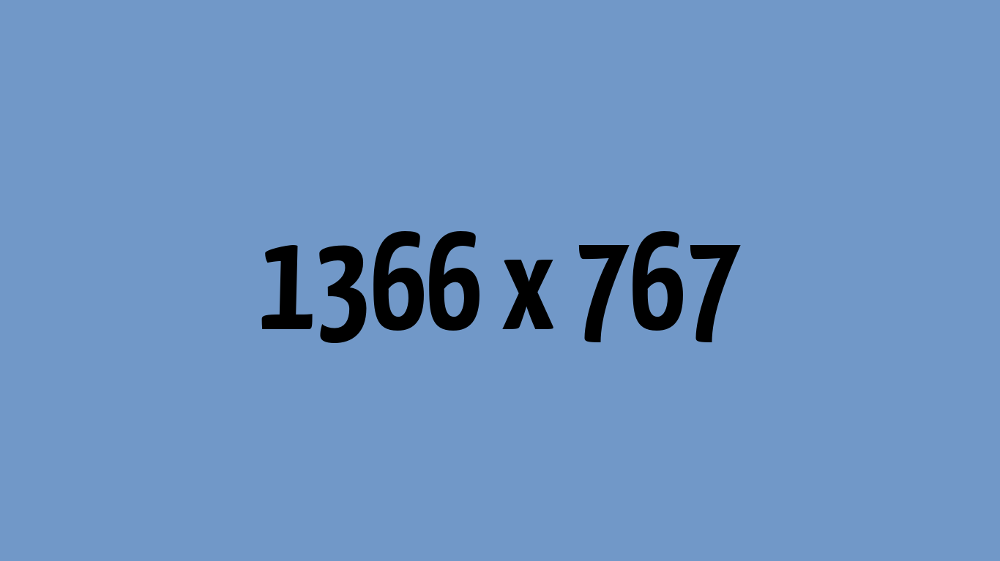
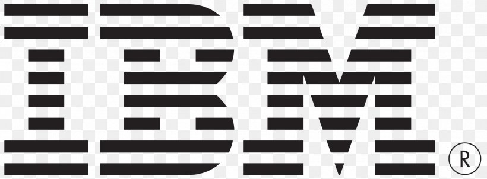
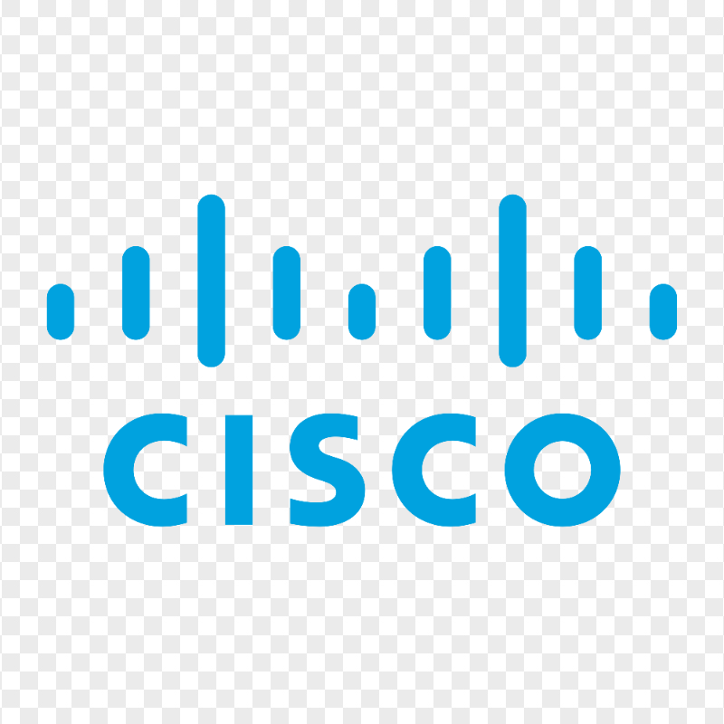

Web
- Semantic HTML, modern CSS, responsive design
- JavaScript (ES Modules), React, Vite
- Accessibility-first workflows
Netcentric Computing Student · Developer
I design content-first, accessible experiences that pair rapid delivery with thoughtful polish. My current focus is turning AI curiosity into usable product features while keeping performance budgets in check.
I am a third-year Bachelor of Computer Science (Hons.) Netcentric Computing student at UiTM Shah Alam with a CGPA of 3.45. I love translating curiosity about emerging technology into tangible solutions, and I am known for delivering polished, accessible work ahead of deadlines.
Whether I am prototyping real-time sports experiences or building IoT wearables for safety, I care about pairing resilient engineering with empathetic design. Collaboration, knowledge sharing, and continuous learning keep me energised.
Content-first experiences that remain fast and accessible.
Iterative delivery, transparent communication, and QA baked in.
Progressive Three.js hero scenes that respect performance.
A crowdsourcing web app for creating and joining pick-up games in real time. Hosts publish match openings while an algorithm ranks players using vector embeddings and KNN similarity to deliver balanced teams.

Automated pipeline scraping 35-plus Southern California city permit portals, normalising records, and displaying eligibility through an interactive map with drive-time overlays for field teams.
Wearable device that tracks a child's location, environmental data, and SOS alerts. Parents receive real-time notifications via GSM while monitoring a Blynk dashboard.
Security assessment exercises using DVWA on Kali Linux, covering vulnerabilities, exploitation paths, and mitigation strategies to strengthen web application posture.
Each credential reinforces curiosity for emerging tech and a habit of turning learning into delivery.

IBMCredential emphasising practical AI terminology, machine learning workflows, and responsible adoption.

CiscoStudy of connected device fundamentals, networking basics, and security considerations for IoT deployments.
Four-course learning path building literacy across Google Cloud data, ML, infrastructure, networking, and security pillars.
Baseline credential covering AWS architectural principles, pricing models, shared responsibility, and security best practices.
Academic recognition for Semester 5 and 6 results in the Bachelor of Computer Science (Hons.) Netcentric Computing programme.